Too many separate steps
Buying tickets individually and handling multiple receipts added coordination work for a guide and agency.
Rebranding the existing SNCB app around the people keeping a whole group on track, tour guides and the tourists travelling with them.
Explore the rebrand ↓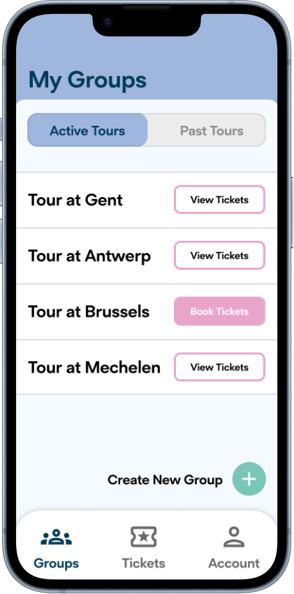
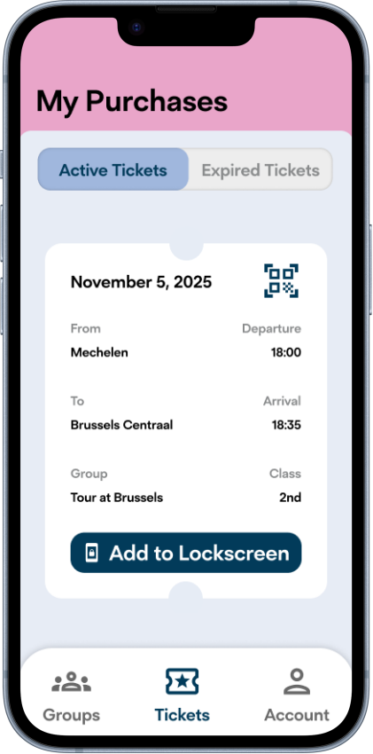
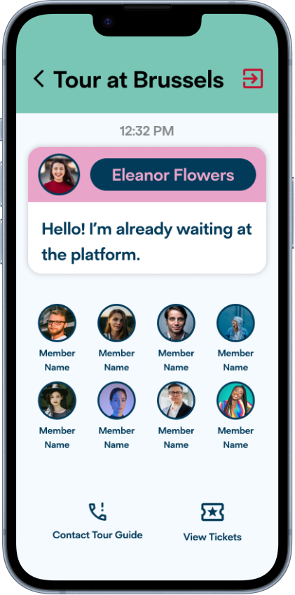
SNCB already had an app. Our challenge was to give it a new visual direction and rethink its experience for a specific audience. We focused on professional tour guides and the tourists travelling with them in Belgium. The redesign supports guides organising group train travel and tourists following their guide, accessing tickets and keeping up with the journey.
I collaborated with two classmates on the research, concept, design and evaluation during the first semester of my second year. I created the motion moodboard individually.
The official app and our student concept, shown separately to compare the visual direction and audience focus.
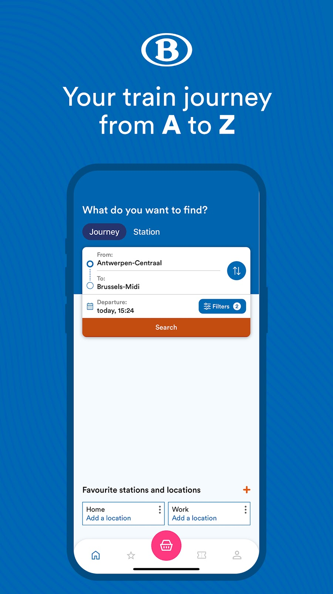
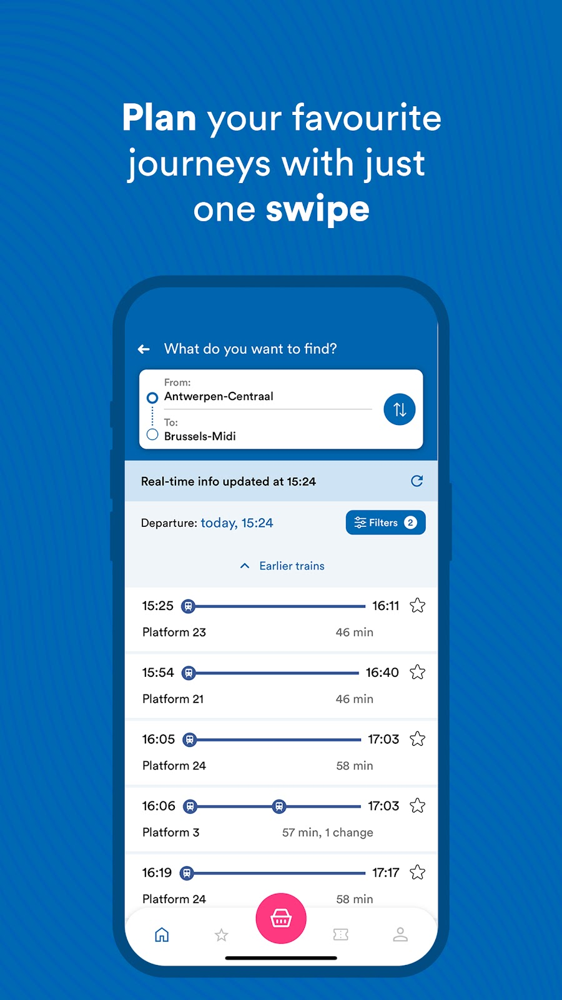


Our pitch documents station observations: groups clustered around a guide, difficulty understanding announcements, stress when platforms changed and uncertainty about luggage storage. Even after switching to English, travellers still struggled with ticket choices.
Buying tickets individually and handling multiple receipts added coordination work for a guide and agency.
Language barriers and last minute platform changes made it harder to keep everyone informed.
The journey map follows the group beyond the train, through arrival and the guide’s expense reporting.
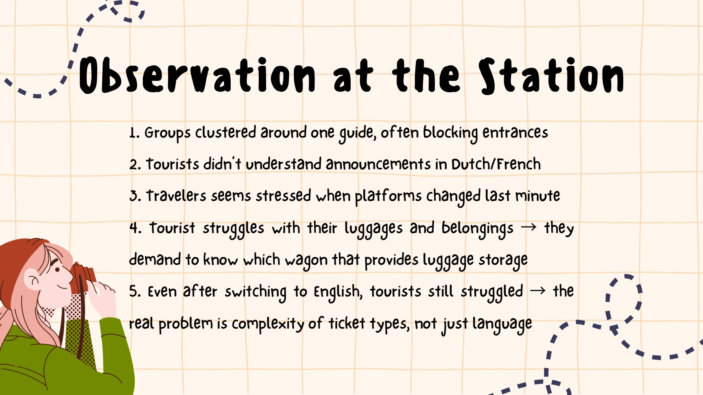
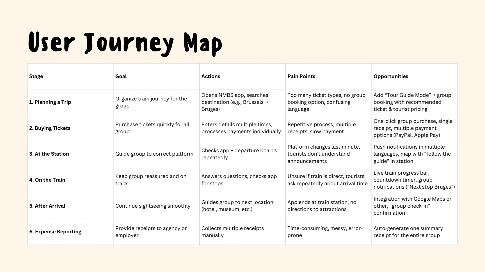
Our visual direction was pastel, relaxing and soft. I created the motion moodboard, bringing travel imagery, gentle movement, interface references and Antebas Bold together.
The direction pairs soft blue, pink and mint surfaces with dark blue text and controls. We carried that softer character into onboarding, group views and ticket journeys, then reviewed consistency and contrast during evaluation.
The type reference shown in the original moodboard.
We developed two connected perspectives. A guide can organise and buy tickets for the group, while a tourist can access their own tickets and keep the journey close at hand.
The guide creates an account, manages a tour group and buys tickets for the Brussels trip. The flow also includes announcements and sharing a group through a link or QR code.
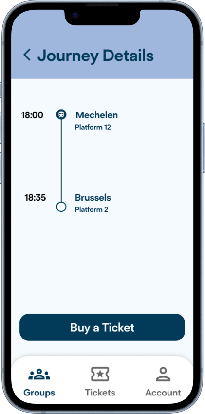
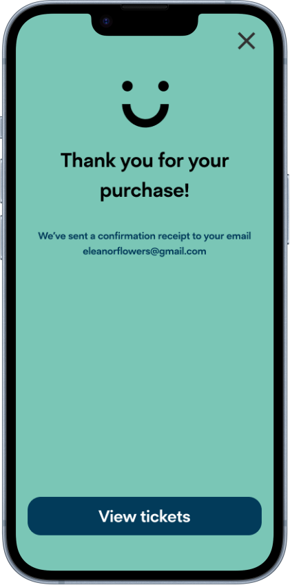
The tourist joins a group, stays connected to the guide, views tickets for Brussels and adds the journey to the lock screen.
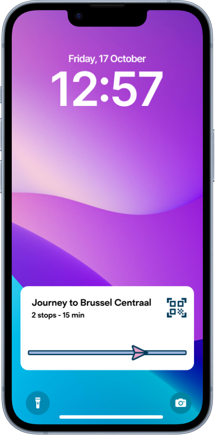
We reviewed the redesign using the ten usability heuristics in the evaluation workbook. The annotated Figma file connects specific issues with suggested improvements, from feedback after joining a group to clearer onboarding.
Account creation, joining a group and scanning a QR code needed clearer feedback. The review also questioned whether “group” sounded like a group chat rather than a tour.
The review called for a way to leave or delete a group, an exit from composing an announcement, visible required fields and journey dates and times that stay in view.
Recommendations included more consistent action colours, stronger contrast, fewer decorative button shadows, useful error and retry messages, and clearer onboarding. Filters and saved journeys were also noted as opportunities.

The workbook provided the evaluation structure. The annotated Figma pages record the concrete findings and proposed changes. This was a heuristic review of the concept, rather than a measured usability test with reported success rates.
Read the evaluation ↗We kept the two core tasks while revising the details around them. The design file preserves both the earlier flows and the versions after heuristic evaluation.
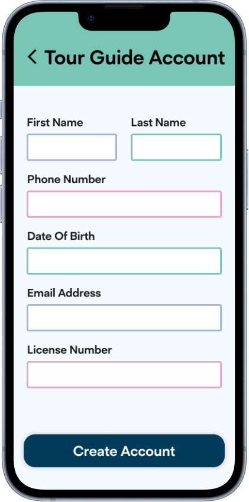
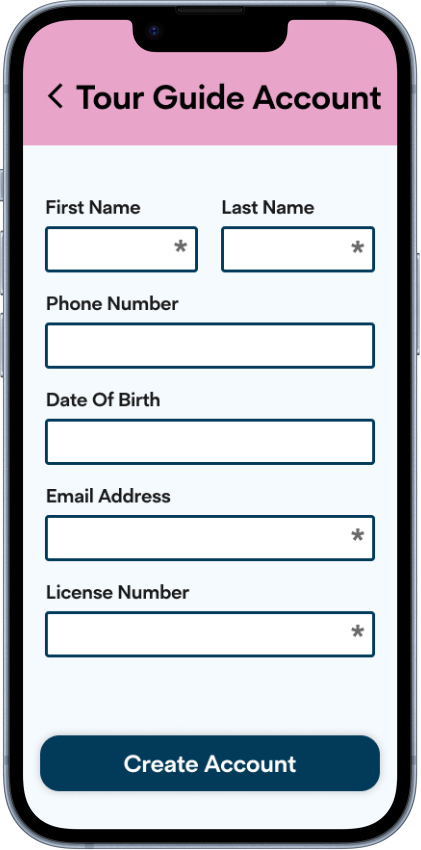
The comparison above shows the guide registration form before and after the required fields were marked. This makes the necessary inputs visible before someone submits the form. The revised tourist flow also includes an explicit group confirmation screen, while journey options retain the selected route, date and time.
The evaluation asked for visible feedback when someone joins a group. This revised screen confirms the tour name, explains what becomes available and offers a direct next step.
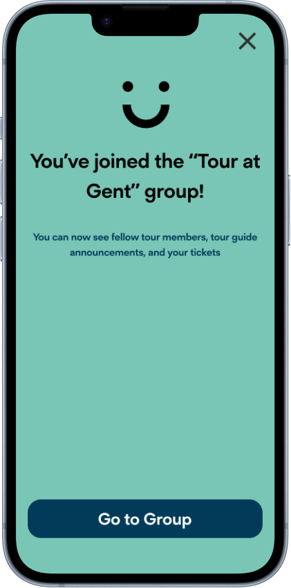
The revised flows bring together onboarding, group management, booking, tickets and the lock screen widget. Open either preview to inspect the original screens.
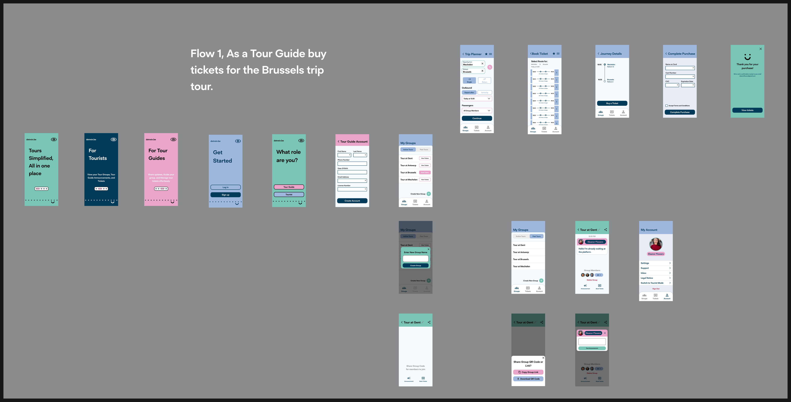
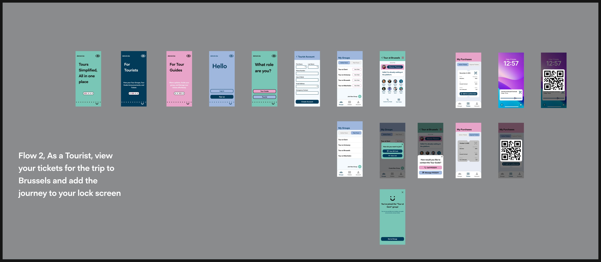
Our result is a rebrand and interface concept that views rail travel through group coordination. The pitch, journey map and two design flows connect the guide’s responsibilities with what tourists need during the trip.
The station observations pointed beyond translation alone. Ticket complexity, platform changes and group coordination all affected the experience, so a different visual style needed to be supported by clearer tasks and feedback.
The next step would be to test the two flows with guides and tourists, particularly joining a group, completing a group booking and finding a ticket during a journey. We have not presented the proposed features as a launched service or measured an improvement in travel outcomes.